01 / 周期地图
周期角色、分支关联与竞争解释。
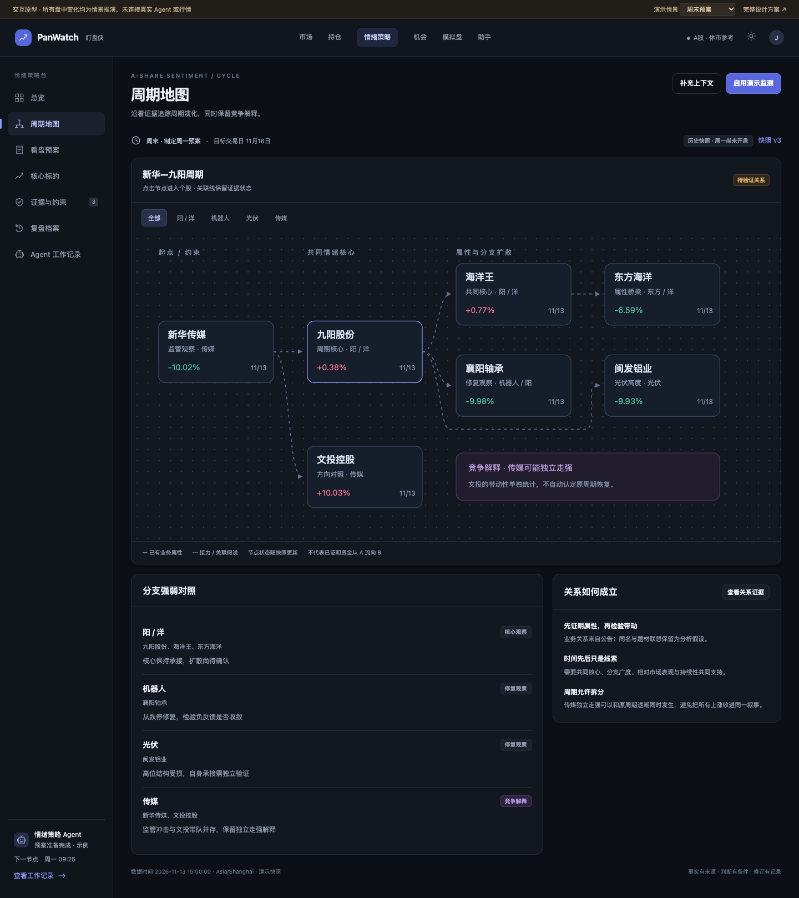
让市场判断、看盘预案和周期记忆持续存在于产品里。Agent 生成结构化分析，程序核验条件与证据，并将同一份快照渲染成不同视图。
7 个视图 · 4 种情景 · 7 只核心标的 · 桌面 / 移动端当前判断、关键约束、接力链、下一步验证与观察池。
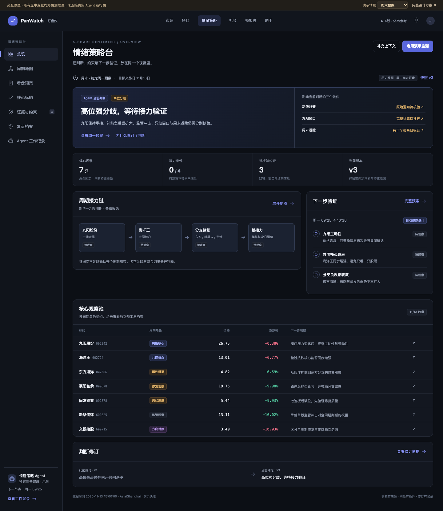
原型数据仅供设计演示 · 缩略预览，完整长图可点击查看
周期角色、分支关联与竞争解释。

四种情景、观察时段与条件状态。
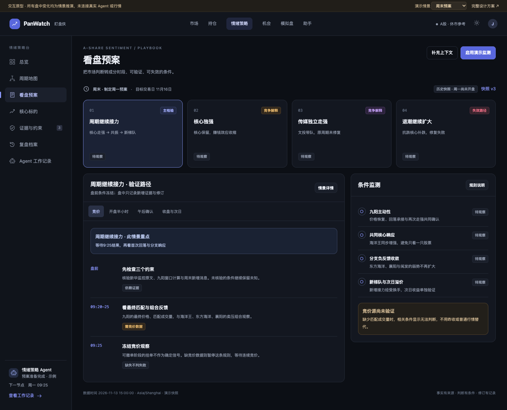
股票角色、历史结构、约束与个股预案。
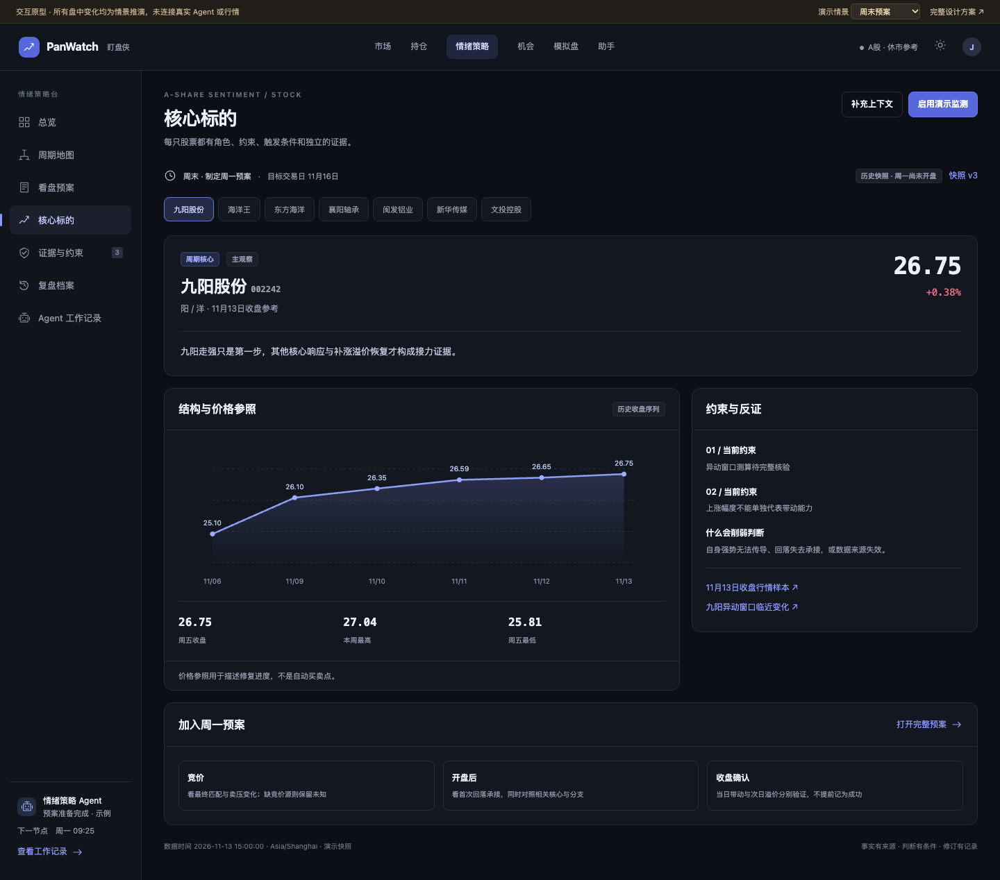
来源、核验状态与影响范围。
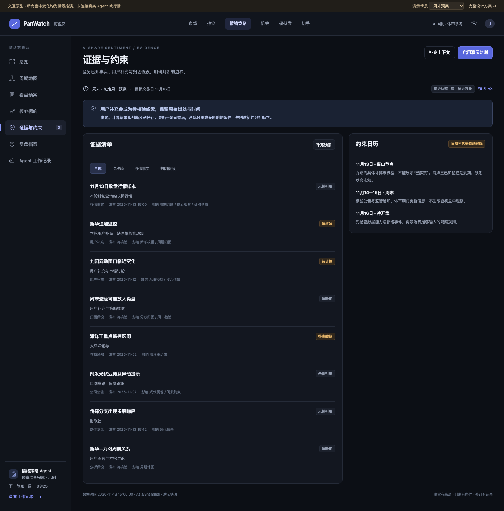
保留原判断、用户纠正与每次修订。
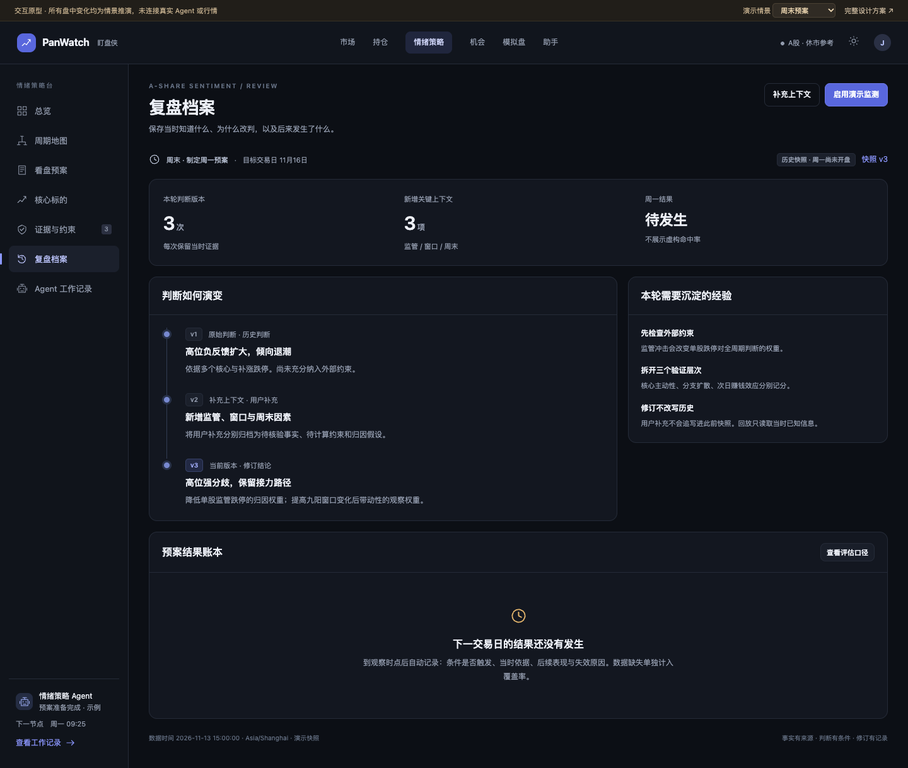
运行摘要、能力缺口和结构化输出。
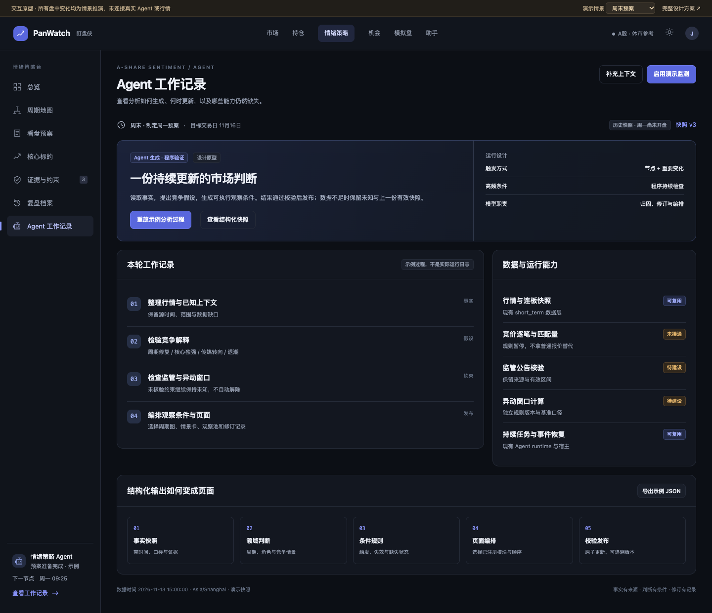
不是只替换一段结论：模块、条件状态、分支判断和提示一起变化。
新增共同核心与分支变化卡。
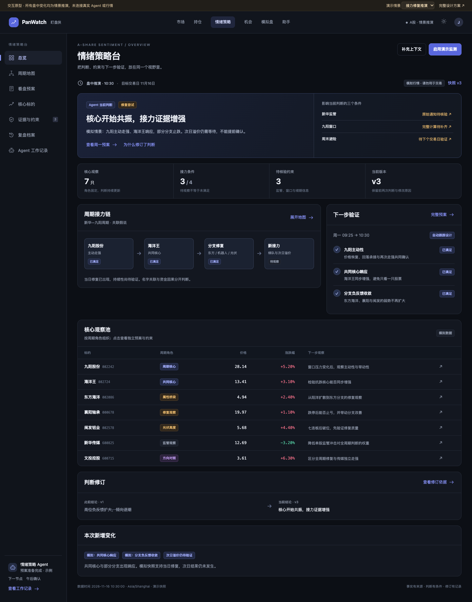
保留反证，提高扩散不足提示。
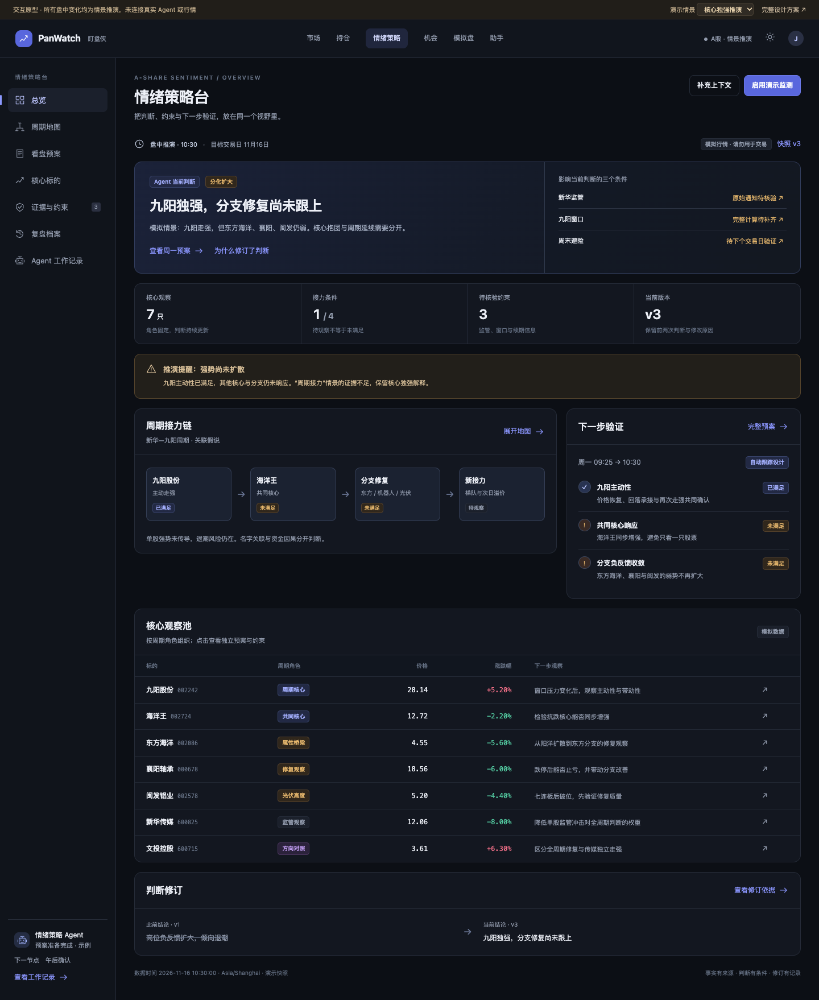
暂停新判断，条件转为未知。
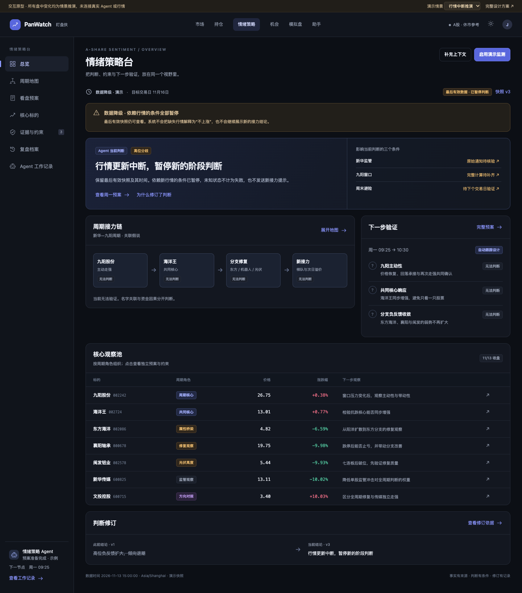
闽发保留自身约束；移动端保持同样的判断边界。
九阳变强不会自动确认闽发修复。
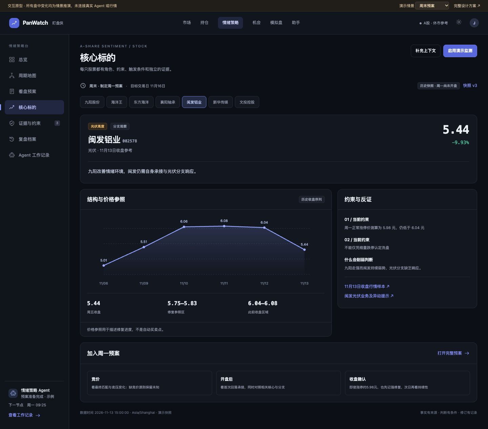
适应不同的看盘环境。
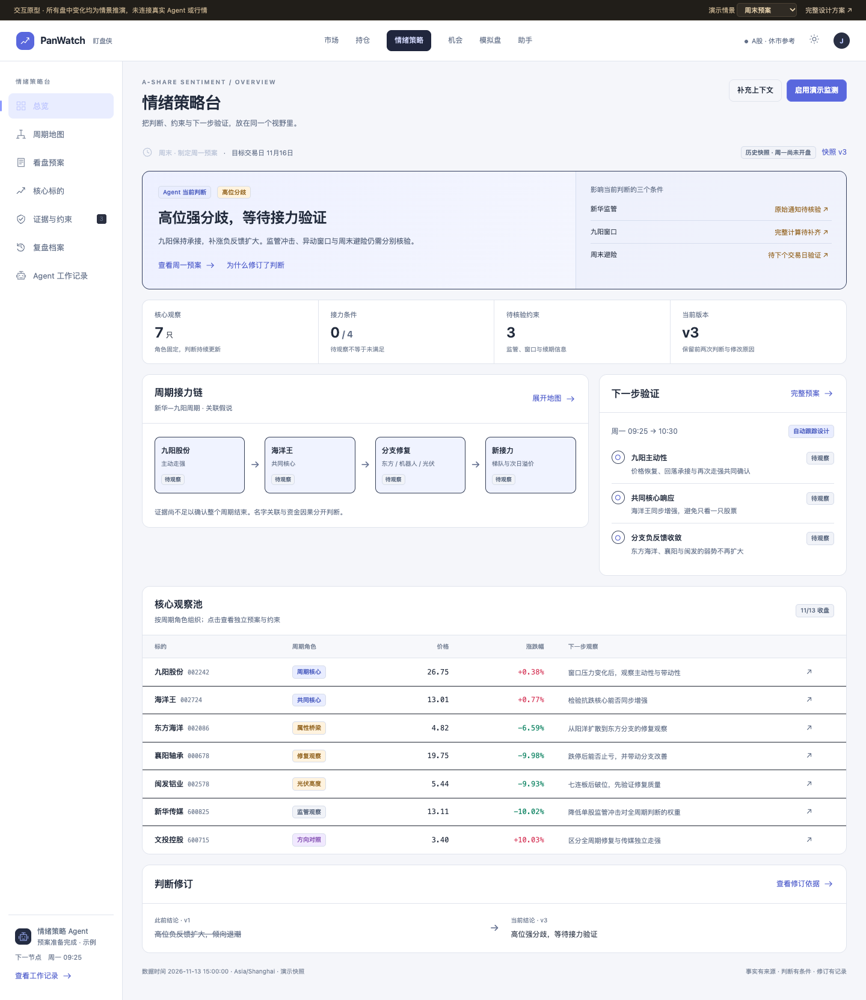
图表与表格在容器内滚动，保留稳定导航。